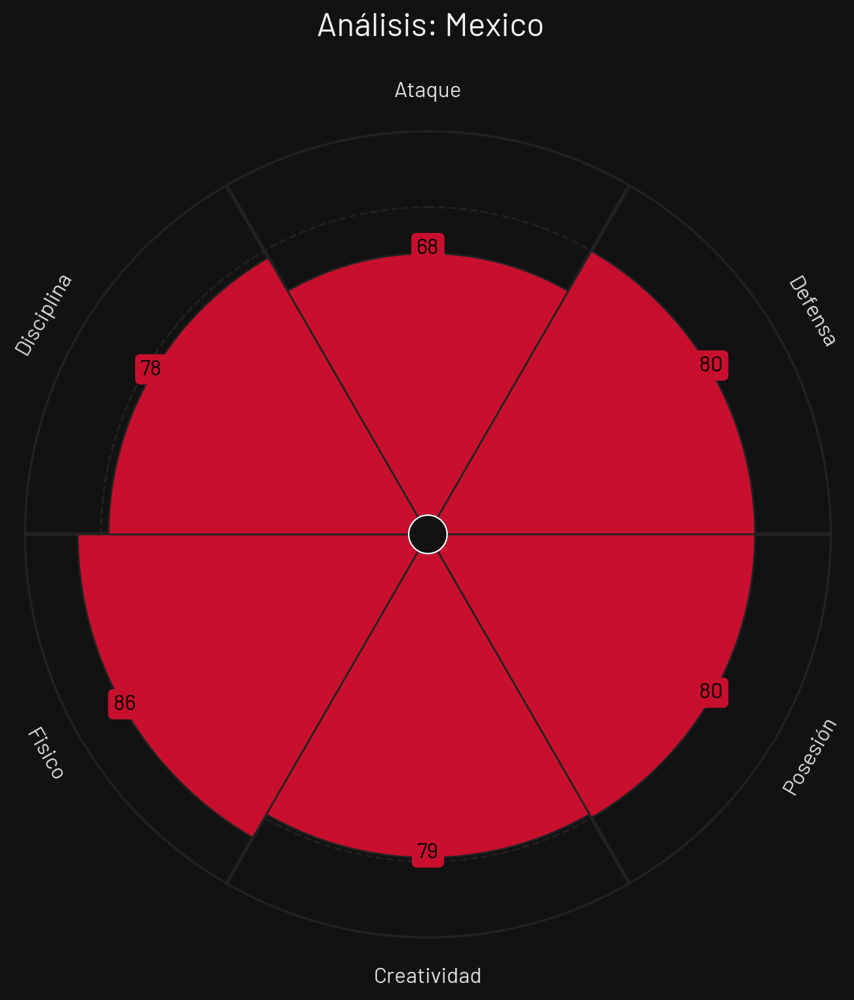
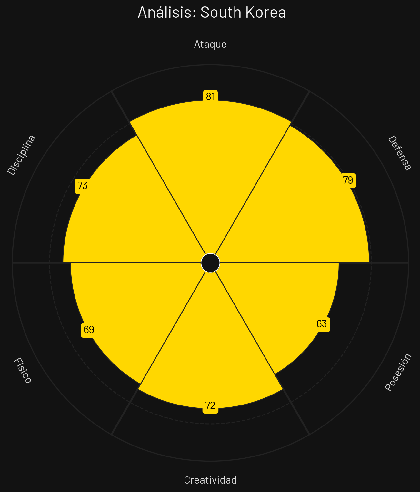
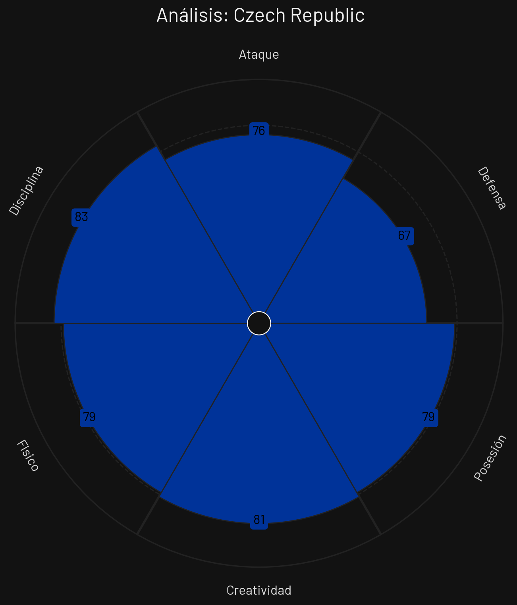
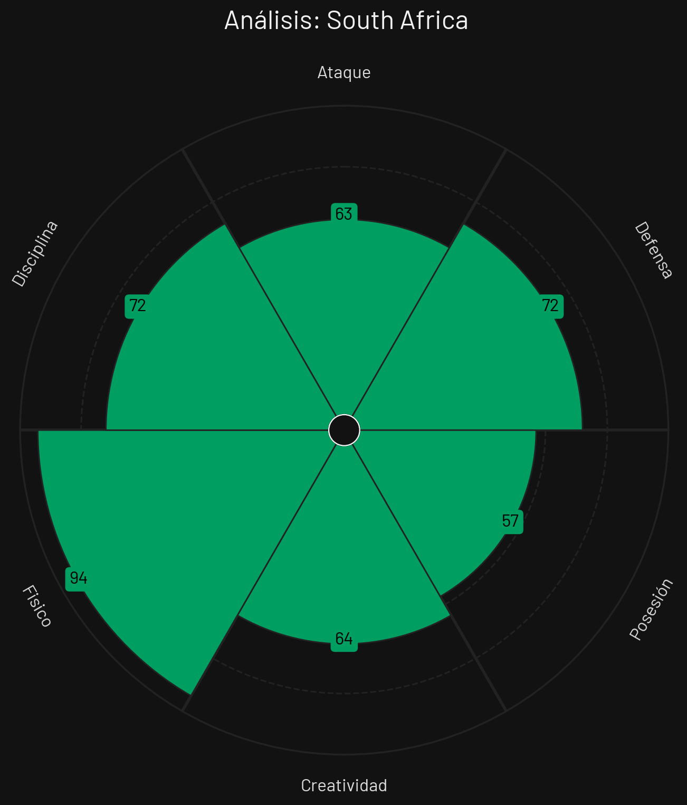

México

Estilo de Juego e Influencia
Posesión asociativa, juego interior por carriles centrales y presión tras pérdida coordinada en bloque medio.
- Formación Base: 4-2-3-1
- xG Promedio: 1.68 por 90 min
- Zona de Presión: Bloque Medio-Alto (PPDA 9.1)
- Jugador Clave: Santiago Giménez
Corea del Sur

Estilo de Juego e Influencia
Transición ofensiva rápida impulsada por extremos de élite, repliegue veloz y alta intensidad física.
- Formación Base: 4-3-3
- xG Promedio: 1.74 por 90 min
- Zona de Presión: Bloque Alto (PPDA 8.5)
- Jugador Clave: Son Heung-min
Rep. Checa

Estilo de Juego e Influencia
Estructura defensiva física, fortaleza aérea en ambas áreas y salidas directas de transición rápida buscando superioridad por bandas.
- Formación Base: 3-4-1-2 / 3-5-2
- xG Promedio: 1.25 por 90 min
- Zona de Presión: Bloque Medio (PPDA 10.8)
- Jugador Clave: Patrik Schick
Sudáfrica

Estilo de Juego e Influencia
Bloque bajo replegado, cobertura densa en zona de finalización y salidas verticales rápidas por carriles externos.
- Formación Base: 4-1-4-1
- xG Promedio: 0.95 por 90 min
- Zona de Presión: Bloque Bajo (PPDA 11.9)
- Jugador Clave: Percy Tau
Análisis Técnico: Grupo A - Mundial 2026
Basándome en los perfiles tácticos proporcionados, presento un análisis técnico detallado de los equipos del Grupo A:
📊 Comparativa General de Atributos
| Atributo | ||||
|---|---|---|---|---|
| Ataque | 68 | 81 | 76 | 63 |
| Defensa | 80 | 79 | 67 | 72 |
| Posesión | 80 | 63 | 79 | 57 |
| Creatividad | 79 | 72 | 81 | 64 |
| Físico | 86 | 69 | 79 | 94 |
| Disciplina | 78 | 73 | 83 | 72 |
🔍 Análisis por Equipo
MÉXICO
Fortalezas
- Ataque Asociativo (78): Gran capacidad para asociarse en carril central.
- Localía y Clima (85): Adaptación y apoyo masivo en estadios locales.
- Transiciones Fluidas (76): Rápida salida desde atrás.
Debilidades
- Defensa de Transición (72): Vulnerable a contras rápidas si los laterales están proyectados.
Estrategia: Dominio de la posesión, triangulaciones en el último tercio y presión inmediata tras pérdida en mediocampo.
COREA DEL SUR
Fortalezas
- Velocidad en Transición (85): Contraataque directo letal.
- Intensidad Física (80): Presión constante durante 90 minutos.
- Efectividad xG (79): Gran porcentaje de conversión de tiros.
Debilidades
- Defensa contra Bloque Bajo (70): Dificultades para abrir defensas muy replegadas.
Estrategia: Atracción de presión rival para atacar a espaldas de la defensa mediante desmarques de ruptura veloces.
REP. CHECA
Fortalezas
- Fortaleza Aérea (84): Dominio absoluto en balones parados y centros.
- Organización Defensiva (78): Línea de 3 centrales muy compacta.
- Resiliencia (77): Capacidad para resistir embates de posesión larga.
Debilidades
- Creatividad Dinámica (66): Limitada generación de juego en estático.
Estrategia: Defensa sólida de área, centros laterales directos buscando al delantero centro y máxima efectividad en balón parado.
SUDÁFRICA
Fortalezas
- Repliegue Rápido (78): Defienden con muchos hombres en área propia.
- Agilidad en Contras (74): Extremos veloces al espacio.
- Disciplina Táctica (72): Apego estricto al plan defensivo.
Debilidades
- Volumen Ofensivo (62): Escasas llegadas al área rival por partido.
- Falta de Posesión (60): Dificultades para retener el balón largo tiempo.
Estrategia: Cerrar pasillos interiores en bloque bajo y lanzar contras veloces en cuanto recuperan el esférico.
⚔️ Matchups Clave
🏆 Proyección del Grupo
Clasificación Esperada:
🧠 Análisis Táctico Avanzado
A continuación, se presenta un análisis técnico y cuantitativo del **Grupo A** para el Mundial de Fútbol 2026, evaluando las fortalezas y debilidades de cada selección a partir de sus perfiles estadísticos.
🔍 Análisis Perfil por Perfil
1. Corea del Sur
Basado en el archivo `PerfilTacticoCoresDelSur.png`, la escuadra asiática se posiciona como el equipo con mayor pegada y efectividad en el último tercio dentro del grupo.
- Fortaleza principal: Su volumen e impacto ofensivo (81), combinado con una retaguardia bastante sólida (79). Esto sugiere un bloque capaz de capitalizar transiciones rápidas sin descompensarse atrás.
- Área de mejora: Su registro de posesión (63) indica que no es un equipo que busque monopolizar el balón. Prefieren un fútbol más directo, vertical y de transiciones veloces antes que ataques posicionales desgastantes.
2. México
De acuerdo con el archivo `PerfilTacticoMexico.png`, el conjunto norteamericano destaca por su capacidad de control y despliegue sin balón, aunque adolece de contundencia.
- Fortaleza principal: Un imponente apartado físico (86) secundado por un excelente control del ritmo y la circulación (80 en Posesión). Su estructura defensiva (80) los hace un equipo sumamente ordenado y difícil de quebrar en bloque bajo o medio.
- Área de mejora: El déficit en ataque (68). A pesar de dominar el esférico y la zona medular, la falta de efectividad o de un argumento ofensivo de élite podría penalizarlos en partidos cerrados.
3. República Checa
Al examinar el archivo `PerfilTacticoRepCheca.png`, los europeos se perfilan como el conjunto con mayor fluidez asociativa e inventiva del sector.
- Fortaleza principal: La generación de juego (81 en Creatividad) y un comportamiento impecable en el orden táctico (83 en Disciplina). Es un equipo que asimila muy bien los planes de partido y mantiene un flujo constante de posesión (79).
- Área de mejora: La fragilidad en la última línea. Con un 67 en Defensa (el más bajo del grupo), corren serios riesgos ante rivales letales al contragolpe o en el juego aéreo si sus vigilancias defensivas fallan.
4. Sudáfrica
El análisis del archivo `PerfilTacticoSudafrica.png` revela un ecosistema táctico hiper-físico y reactivo.
- Fortaleza principal: Un poderío atlético descomunal (94 en Físico). Esta ventaja les permite sostener ritmos de presión alta extenuantes, ganar duelos individuales y competir con mucha intensidad en segundas jugadas.
- Área de mejora: La construcción de juego. Sus registros de posesión (57) y ataque (63) son los colistas del grupo, lo que los obligará a depender en demasía de jugadas a balón parado, errores del rival o contragolpes puros para dañar el arco contrario.
⚡ Dinámica Táctica del Grupo
El Grupo A plantea choques de estilos sumamente marcados que forzarán ajustes en las pizarras: